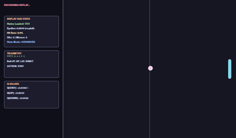

1. Interactive Educational Agent 300 States
Runs entirely in JavaScript. Watch the agent learn to intercept the ball from scratch using the Bellman equation.
Agent Decision State
Active Q-Values Q(s, a) for Current State
| Action (a) | Estimated Value Q(s, a) | Preference |
|---|---|---|
| STAY (0) | 0.0000 | |
| UP (1) | 0.0000 | |
| DOWN (2) | 0.0000 |
Local Training Statistics
2. Research Agent Telemetry 6,000 States
Training history of the fully featured agent compiled from the Python training loops.
Telemetry Curves
3. Behavioral Timeline Research Run
Milestone evaluation recordings demonstrating the emergence of specific capabilities.
Episode 100
Random ExplorerLoading Episode 100 GIF...

Episode 500
Emergent TrackerLoading Episode 500 GIF...

Episode 1000
Consistent DefenderLoading Episode 1000 GIF...

Episode 5000
Master AgentLoading Episode 5000 GIF...

4. Tabular RL Discretization Details
Mathematical formulations comparing the representation state spaces used by the two agents.
Discretization Vector Mapping
Educational Agent (In-Browser)
Dimensions: $10 \times 10 \times 3 = 300$ states. Focuses on vertical alignment only, enabling full convergence in less than 300 episodes.
Research Agent (Python Server)
Dimensions: $10 \times 10 \times 10 \times 3 \times 2 = 6,000$ states. Adds depth estimation and horizontal travel directions to prevent state aliasing.
Temporal Difference Loop
Update Equation: $$Q(s, a) \leftarrow Q(s, a) + \alpha \left[ r + \gamma \max_{a'} Q(s', a') - Q(s, a) \right]$$
Q-Learning Fundamentals
Tabular Q-learning maintains a lookup table containing estimated values for each state-action pair. In this experiment, the environment calculates values for three possible actions: stay, move up, or move down.
Parameters Details:
- Learning Rate ($\alpha$): Set to
0.10. Determines the speed of replacing previous value estimates with new experience. - Discount Factor ($\gamma$): Set to
0.95. Dispositions the agent to value immediate ball reflections over infinite future actions. - Exploration ($\epsilon$): Decays from
0.60to0.02as the episode count grows. Deciding actions uses the epsilon-greedy algorithm (random exploratory moves versus optimal greedy memory selection).
*Note: By keeping the state space restricted to 300 slots in-browser, visitors can clear the memory table and watch the policy converge to tracking competence in under two minutes of real-time execution.